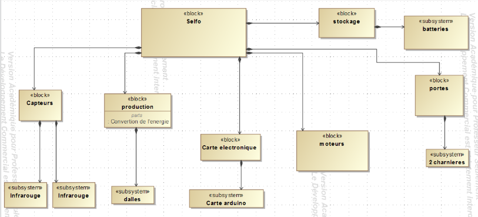

Diagrammes SYSML

Les diagrammes SYSML permettent la spécification, l'analyse, la conception, la vérification et la validation de nombreux systèmes et systèmes-de-systèmes.
Nous avons donc conçu 6 diagrammes SYSML afin de compléter le cahier des charges et pouvoir concevoir ce projet.
On peut donc voir les diagrammes suivants:
- Diagramme des cas d'utilisation
- Diagramme des blocks internes
- Diagramme des definition des blocks
- Diagramme des exigences
- Diagramme d'état
- Diagramme de séquence
